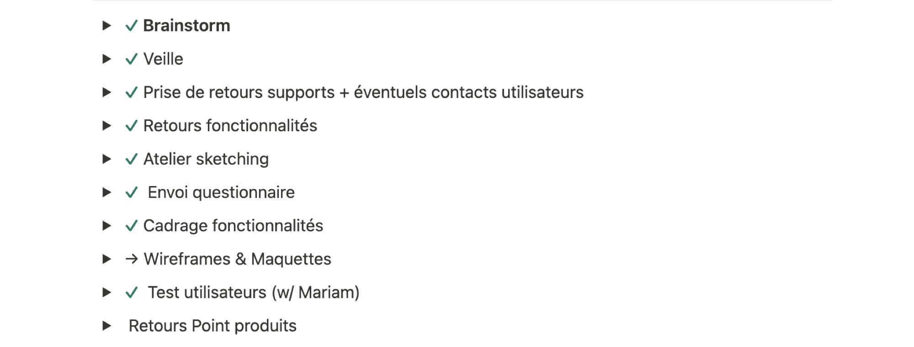
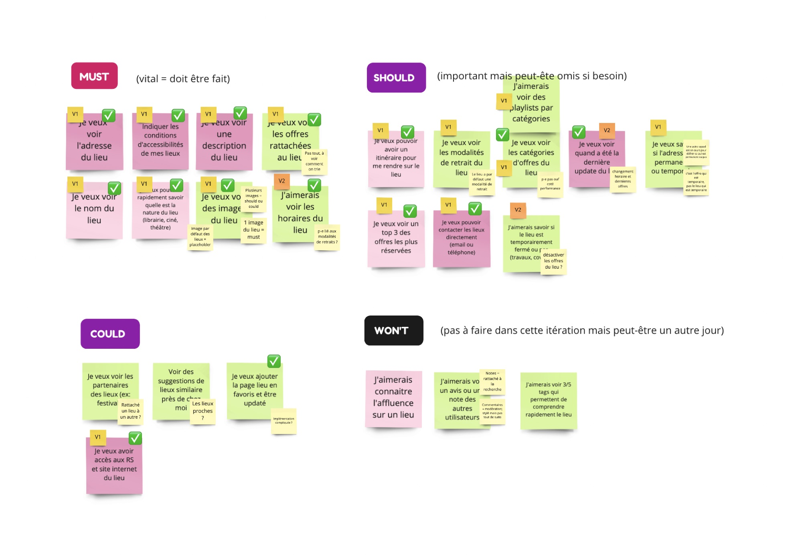
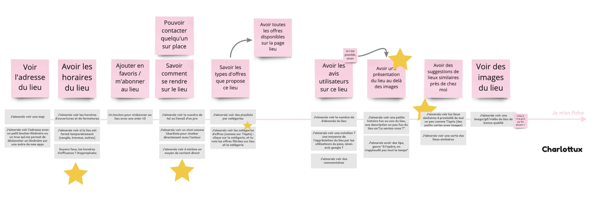
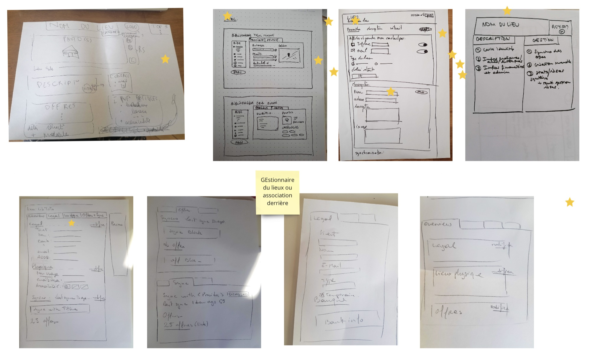
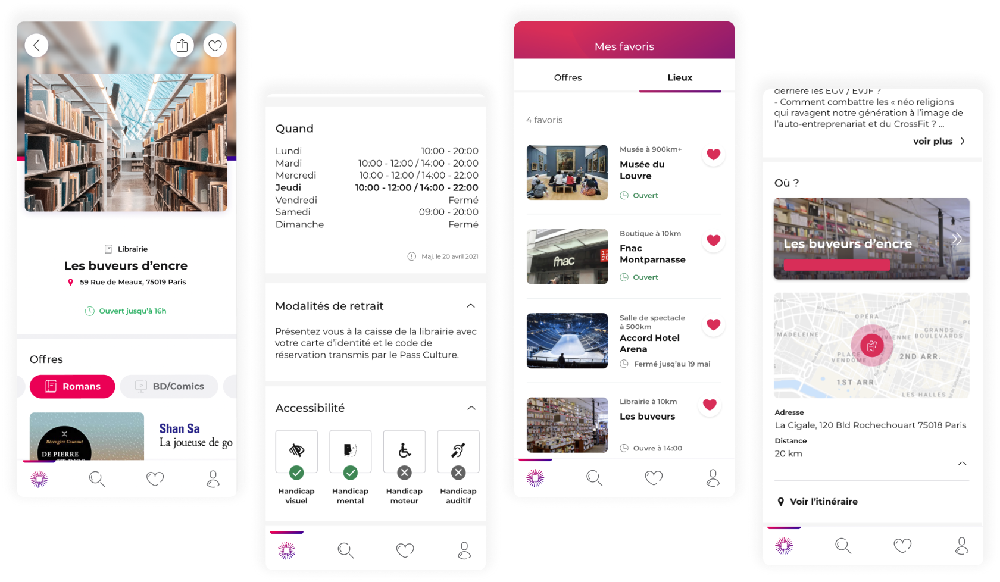

Overview
Pass Culture is a French Ministry of Culture initiative that gives 18-year-olds a budget to spend on cultural offers. In the app, young people could only browse offers one by one. I designed the venue page, so they could discover a cultural place and everything it offers: books, shows, opening hours and how to get there.
Details
- Surface
- Mobile app, iOS & Android
- Role
- UX & UI Designer
- Team
- Designer · Developers · Product Owner · On-site business developer
- Scope
- User interviews · Prioritization workshops · Sketching workshop · UI design · User tests
Problem
Offers without a place
Young people discover culture through places: a bookshop near home, a cinema, a museum. But the app only showed isolated offers, with no way to see what a venue had to offer or how to get there.
Solution
A page for every venue
A venue page bringing together its offers by category, opening hours, pick-up instructions, accessibility and directions, with the option to save it to favourites.
Result
More bookings, fewer drop-offs
The venue page shipped on iOS and Android. Bookings rose by 15 points and fewer young people left without exploring, as they could finally see everything a place had to offer.
Impact
+15 pts
of bookings once young people could browse offers by venue
30
young people interviewed to understand what they need to know before visiting a place
8
must-have features agreed with the squad for the first version
Context
To let young people browse places instead of single offers, the app needed a venue page.
On this page, they would be able to search for offers, check opening hours and find directions. The content also had to stay in sync with the PRO web app, where venues publish their offers.
Goals
Let young people explore the offers of the cultural places they discover.
- Understand what users need to know about a venue before going there.
- Agree as a squad on a first version we could ship, and what would come later.
- Keep the app consistent with what venues enter in the PRO web app.
Process
We followed a process defined in Notion, which can be adapted from one project to the next.
Research
Brainstorm, competitive watch, support feedback, and interviews with 30 young people.
Prioritization
A user survey and a remote workshop in Miro to choose the core features.
Sketching & tests
A sketching workshop with the PRO stream, then wireframes, mock-ups and user tests.

Key steps
Step 01
Prioritizing features with the whole squad.
To make sure we built what users needed, we ran workshops and a survey, then sorted every idea into Must, Should, Could and Won't. Each squad member took part through Miro, so the workshop worked remotely.

Step 02
Sketching with the PRO stream.
To picture how the features would appear, I ran a sketching workshop with my squad and the PRO stream, which builds the web app where venues publish their offers. Content in the app had to match what venues enter there.

Step 03
From paper to screens on both sides.
The sketches covered both the venue page in the app and the venue management screens in the PRO web app, so the two could evolve together.

Solution
One page that answers the questions young people ask before going somewhere.
Offers grouped by category, opening hours with the last update date, pick-up instructions, accessibility for each type of disability, a map with directions, and venues saved to favourites next to offers.
Design
The venue page
Designed and tested on iOS and Android.

What I learned
Designing as part of a squad.
Working day to day with developers, a Product Owner and a business developer on site.
Workshops make decisions shared.
Running workshops and user tests helped us iterate on what we delivered, with the whole team on board.
Designing for two platforms.
Testing and designing what we shipped on both iOS and Android smartphones.
What I'd do next
Ship the features we kept for the second version: a top 3 of the most booked offers at each venue, suggestions of similar places nearby, and a clear notice when a venue is temporarily closed for works or holidays.